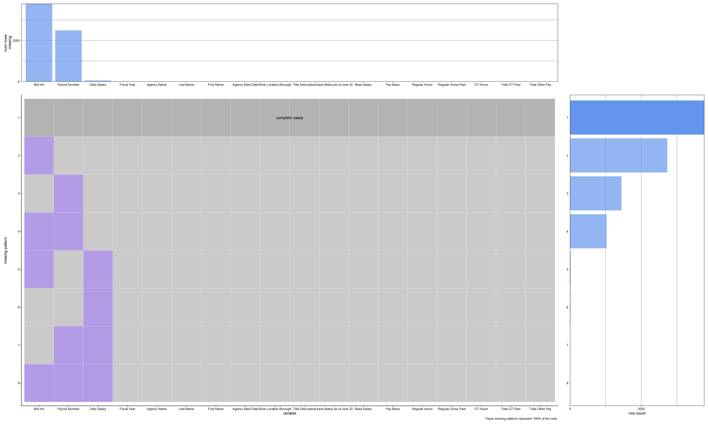
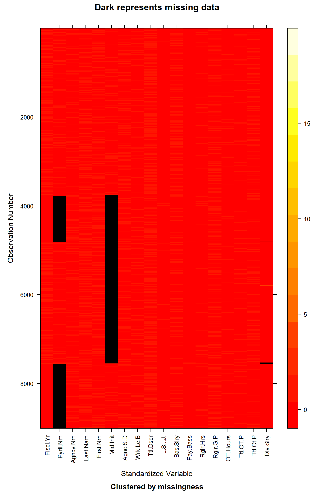

Code
# Importing Necessary Libraries
library(knitr)
library(redav)
library(mi)
library(ggplot2)
library(data.table)
library(dplyr)# Importing Necessary Libraries
library(knitr)
library(redav)
library(mi)
library(ggplot2)
library(data.table)
library(dplyr)The data that we will be using to analyze Payroll Data is from the NYC Open Data website and is titled as Citywide Payroll Data (Fiscal Year). The data set was created back in 2015 and has been constantly been updated on a annual basis (last update was on October 8,2025). It tells us about the amount of money spent on salaries and overtime pay for all municipal employees based in New York City. The data is provided by Office of Payroll Administration (OPA).
The data can be downloaded as a CSV file from the website mentioned above. The entirety of the dataset consists of 6.78 million rows (essentially 6.78 million municipal employees) and 17 columns. Every row basically tells us about the employee salary, their work location, agency, base pay, overtime (if any), etc.
However, the dataset is too large for efficient processing. Hence, we randomly sample our data and retrieve 10000 samples for our analysis. The code for the same can be found below, but has been commented out, as such large files cannot be uploaded to GitHub, and rendering will be affected.
library(data.table)
complete_payroll_data <- fread("./Data/Citywide_Payroll_Data_(Fiscal_Year)_20251209.csv")
# Take Random sample of 10000 rows
random_data <- complete_payroll_data[sample(nrow(complete_payroll_data)),]
nyc_payroll_data <- random_data[1:10000,]
write.csv(nyc_payroll_data, "./Data/nyc_payroll_data.csv", row.names = FALSE)
#Importing the Dataset
nyc_payroll_data <- read.csv("./Data/nyc_payroll_data.csv")print(dim(nyc_payroll_data))[1] 10000 17# Display Columns of the dataset
# Display Columns of the dataset
kable(data.frame(Column_Names = names(nyc_payroll_data)), "markdown")| Column_Names |
|---|
| Fiscal.Year |
| Payroll.Number |
| Agency.Name |
| Last.Name |
| First.Name |
| Mid.Init |
| Agency.Start.Date |
| Work.Location.Borough |
| Title.Description |
| Leave.Status.as.of.June.30 |
| Base.Salary |
| Pay.Basis |
| Regular.Hours |
| Regular.Gross.Paid |
| OT.Hours |
| Total.OT.Paid |
| Total.Other.Pay |
Presented above are the columns of the dataset.
On further examination of the data, we find that there are few inconsistencies in the data:
The column indicative of the Middle Initial of employees, namely, Mid.Init, does not have explicit NA values. However, it has empty strings such as ““,”-” and “.” which essentially show empty entries and can be considered as NA values. This conversion needs to be made.
“Work.Location.Borough” has different boroughs from different parts of New York State such as Albany, Westchester, Delaware etc. Moreover, Staten Island has been mentioned as Richmond County and Manhattan and Bronx have been mentioned twice, where they differ in capitalization. The data also has empty strings.
For our study, we wish to consider only the 5 boroughs of NYC, namely, Manhattan, Brooklyn, Queens, Bronx and Staten Island. The data needs to be preprocessed for the same.
The salaries for employees have not been mentioned on a consistent scale. We have base salaries mentioned per annum, per day, per hour and on a prorated annual basis as well. The scale needs to be consistent for fair comparisons, and we look to convert the data to a “per Day” basis, so as to compare our results with the daily wage.
Finally, the data after our preprocessing will contain NA values which need to be dealt with.
The above inconsistencies have been made based on our analysis as seen below. For the sake of clean code, we have excluded the code and analysis for those columns which did not have any inconsistencies.
#Analyzing Data to Uncover any Possible Inconsistencies
unique(nyc_payroll_data$Mid.Init) [1] "E" "P" "N" "I" "R" "" "T" "L" "J" "M" "A" "O" "F" "Z" "X" "D" "C" "S" "W"
[20] "B" "U" "K" "G" "V" "Y" "H" "Q"unique(nyc_payroll_data$Work.Location.Borough) [1] "QUEENS" "BROOKLYN" "MANHATTAN" "BRONX" ""
[6] "OTHER" "RICHMOND" "DELAWARE" "ULSTER" "Manhattan"
[11] "Bronx" "WESTCHESTER" "PUTNAM" "SCHOHARIE" "SULLIVAN"
[16] "Queens" "ALBANY" unique(nyc_payroll_data$Pay.Basis)[1] "per Annum" "per Day" "per Hour" "Prorated Annual"Apart from handling NA values, the inconsistencies have been dealt with below:
# Converting Empty Strings to NA values in "Mid.Init"
nyc_payroll_data$Mid.Init[nyc_payroll_data$Mid.Init==""] <- NA
nyc_payroll_data$Mid.Init[nyc_payroll_data$Mid.Init=="-"] <- NA
nyc_payroll_data$Mid.Init[nyc_payroll_data$Mid.Init=="."] <- NA
# Fixing Issues in "Work.Location.Borough"
nyc_payroll_data$Work.Location.Borough[nyc_payroll_data$Work.Location.Borough==""] <- NA
nyc_payroll_data$Work.Location.Borough[nyc_payroll_data$Work.Location.Borough=="Manhattan"] <- "MANHATTAN"
nyc_payroll_data$Work.Location.Borough[nyc_payroll_data$Work.Location.Borough=="Bronx"] <- "BRONX"
nyc_payroll_data$Work.Location.Borough[nyc_payroll_data$Work.Location.Borough=="RICHMOND"] <- "STATEN ISLAND"
nyc_boroughs <- c("BROOKLYN", "MANHATTAN", "QUEENS", "BRONX", "STATEN ISLAND")
nyc_payroll_data <- nyc_payroll_data[nyc_payroll_data$Work.Location.Borough %in% nyc_boroughs,]
# Making Data Scale Consistent in Base.Salary through Pay.Basis
# Adding new column "Daily.Salary"
library(dplyr)
library(stringr)
# RELOAD DATA (Important to reset any previous failed attempts)
# nyc_payroll_data <- read.csv("./Data/nyc_payroll_data.csv")
nyc_payroll_data <- nyc_payroll_data %>%
# 1. CLEAN BASE SALARY: Remove '$' AND ',' then convert to number
# The regex "[$,]" tells R to find EITHER a dollar sign OR a comma and delete them.
mutate(Base.Salary = as.numeric(gsub("[$,]", "", Base.Salary))) %>%
# 2. CLEAN PAY BASIS: Trim invisible spaces so the logic works
mutate(Pay.Basis = trimws(Pay.Basis)) %>%
# 3. CALCULATE DAILY SALARY
mutate(Daily.Salary = case_when(
Pay.Basis == "per Hour" ~ Base.Salary * 24,
Pay.Basis == "per Annum" ~ Base.Salary / 365,
Pay.Basis == "per Day" ~ Base.Salary,
TRUE ~ NA_real_
))
# Verify it worked
head(nyc_payroll_data) Fiscal.Year Payroll.Number Agency.Name Last.Name
1 2020 464 COMMUNITY COLLEGE (QUEENSBORO) REYES
2 2022 996 NYC HOUSING AUTHORITY FINN
3 2021 56 POLICE DEPARTMENT BATCHU
4 2021 54 CIVILIAN COMPLAINT REVIEW BD WALLS
5 2020 300 BOARD OF ELECTION POLL WORKERS BOREGMAN
6 2019 744 DEPT OF ED PARA PROFESSIONALS LUCK
First.Name Mid.Init Agency.Start.Date Work.Location.Borough
1 JUANA E 08/31/2005 QUEENS
2 KEVIN P 10/31/2011 QUEENS
3 JEANELLE N 05/29/2020 BROOKLYN
4 T. I 04/01/2019 MANHATTAN
5 ANTONIA R 01/01/2013 MANHATTAN
6 TAKIA N 04/23/2015 MANHATTAN
Title.Description Leave.Status.as.of.June.30 Base.Salary
1 CUNY CUSTODIAL ASSISTANT ON LEAVE 35109.00
2 PLASTERER ON LEAVE 386.16
3 POLICE COMMUNICATIONS TECHNICIAN ACTIVE 40636.00
4 INVESTIGATOR ACTIVE 58167.00
5 ELECTION WORKER ACTIVE 1.00
6 ANNUAL ED PARA ACTIVE 32586.00
Pay.Basis Regular.Hours Regular.Gross.Paid OT.Hours Total.OT.Paid
1 per Annum 792 $16,076.09 0 $1,511.90
2 per Day 1,840 $110,567.77 357.5 $39,886.88
3 per Annum 1,817 $39,153.86 85.42 $2,246.18
4 per Annum 1,820 $53,568.41 0 $0.00
5 per Hour 0 $350.00 0 $0.00
6 per Annum 0 $30,690.71 0 $29.03
Total.Other.Pay Daily.Salary
1 $280.34 96.18904
2 $1,860.54 386.16000
3 $2,000.38 111.33151
4 $0.00 159.36164
5 $0.00 24.00000
6 $0.00 89.27671We save this data as a CSV and read the cleaned version for the next segment.
write.csv(nyc_payroll_data, "./Data/cleaned_nyc_payroll.csv", row.names = FALSE)
clean_nyc_payroll <- read.csv("./Data/cleaned_nyc_payroll.csv")To understand the compensation distribution, we plan to use a boxplot along with a ridgeline plot to study the distribution of the median and the mode of the data. We would like to make this comparison across boroughs.
While understanding the distribution of daily pay is important, we also plan to see how these salaries are broken down and how various components of these salaries are distributed across boroughs. Grouped bar charts are the best method to understand how these components vary.
Each borough has a budget based on the city’s policies. We want to analyze the sum of daily salaries for each borough, to see how the budget should be allocated.
Using a bar plot, we also want to see which boroughs have the most number of workers, and we want to analyze why this is so.
There are various municipal agencies in NYC. Some are more prominent than the others. This could be a result of the need of the city, the priorities or the preference of the people. Using a faceted cleveland bar plot, we would like to see how workers are distributed across some of the most prominent agencies in NYC.
Each borough has some jobs which people prefer. Using a heatmap, we would like to see which job titles have the most number of workers for each borough.
A very important study that needs to be conducted is about the fairness of overtime pay. We plan to use a parallel coordinate plot to show the relationship between Years of Experience, Daily Salaries, Overtime hours and overtime pay. This plot will help us study relationships across multiple variables and unearth any biases or issues.
We would also like to see how the base salary and overtime paid vary with each other, and whether they have any correlation, using a scatterplot.
We also aim to analyze the leave status and workforce dynamics. Leave status typically indicates whether an employee is on leave or not, and if so, what type of leave they are on. This information is often valuable for City Council and management to understand workforce availability, plan for staffing needs, and monitor employee well-being. Along with this, we also use the basis for paying an employee, and whether that has any connection to their current employment status.
We also plan to make use of D3 to make an interactive and animated plot, to show the proportion of the average daily salary across various boroughs, for each year.
colSums(is.na(clean_nyc_payroll)) |> sort(decreasing = TRUE) Mid.Init Payroll.Number
3784 2483
Daily.Salary Fiscal.Year
46 0
Agency.Name Last.Name
0 0
First.Name Agency.Start.Date
0 0
Work.Location.Borough Title.Description
0 0
Leave.Status.as.of.June.30 Base.Salary
0 0
Pay.Basis Regular.Hours
0 0
Regular.Gross.Paid OT.Hours
0 0
Total.OT.Paid Total.Other.Pay
0 0 We see that three columns, namely Mid.Init, Payroll.Number, and Daily.Salary have missing values. The vast majority of missing data comes from the Mid.Init (3,739 rows) and Payroll.Number (2,425 rows) columns, while Daily.Salary has a comparatively negligible number of missing entries (34 rows).
plot_missing(clean_nyc_payroll, percent = FALSE)
As can be seen from the above plot, the dataset exhibits distinct missingness patterns. The most dominant pattern represents complete cases, where no values are missing. Following this, we see significant subsets of data where only Mid.Init is missing or only Payroll.Number is missing. There is also a substantial intersection where both Mid.Init and Payroll.Number are missing simultaneously. The missing values in Daily.Salary appear to be rare occurrences compared to the structural missingness of the identification columns.
The graph on the right details the row counts for each pattern, showing that while missing data is prevalent in the identification columns, the majority of the rows are complete. The bar chart on top summarizes the total missing values per column, reinforcing that Mid.Init is the most frequently missing variable.
missing_data.frame(clean_nyc_payroll) |> image()NOTE: The following pairs of variables appear to have the same missingness pattern.
Please verify whether they are in fact logically distinct variables.
[,1] [,2]
[1,] "Last.Name" "First.Name"
This heatmap visualizes the missing values across the entire dataset. The black cells indicate missing values, while lighter colors represent observed values. We can observe that the missingness in Mid.Init and Payroll.Number is dispersed throughout the dataset. There does not appear to be a strict monotonic pattern (such as all missing values occurring at the top or bottom), suggesting the missingness might be related to specific agencies, employee types, or data entry practices rather than a chronological error.